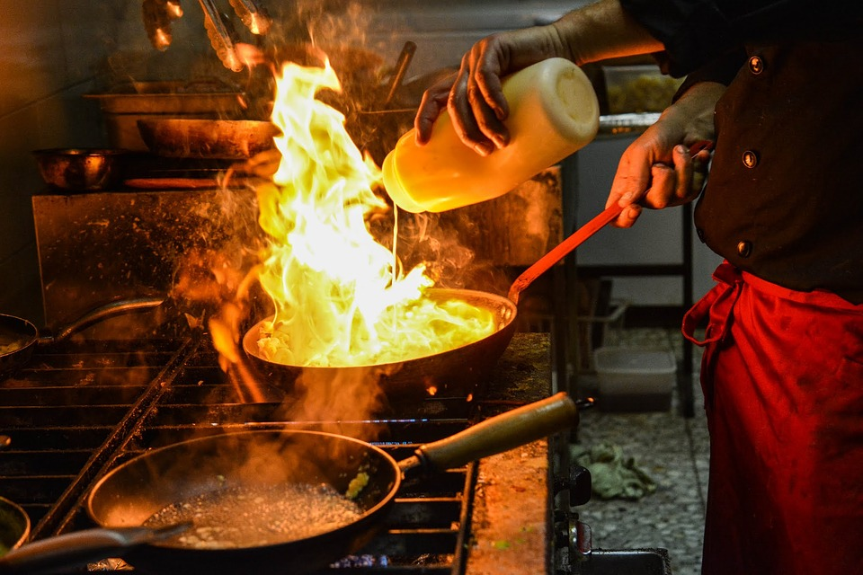

Beneficio de la carrera

El Técnico en Preparación de Alimentos y Bebidas, desarrollará las
competencias en: preparación de alimentos y bebidas y servicios integrales,
coordinación de eventos turísticos, socioculturales, de negocios y procesos
productivos independientes según las necesidades del entorno.
--->
¿Paninis?

El panini o panino es una variedad de sándwich de origen italiano, que tiene distribución
internacional. En Italia, un panino habitualmente se prepara con un panecillo pequeño o
un pedazo de pan, por lo general una ciabatta o una roseta. El pan se corta horizontalmente
y se rellena con salami, jamón, queso, mortadela y algunos otros alimentos, a veces se sirve
caliente después de haber sido presionado en una parrilla. Un panino tostado, coloquialmente
llamado «toast», está hecho de dos rebanadas verticales de pan cassetta casi siempre rellenas
de prosciutto y unas rebanadas de queso, y cocinado a la plancha en una prensa de sándwiches.
En el centro de Italia, existe una versión popular de panino que está lleno de porchetta, es decir,
trozos de carne de cerdo asada. Tradicionalmente se sirve sin ningún tipo de salsa o aceite.
<---